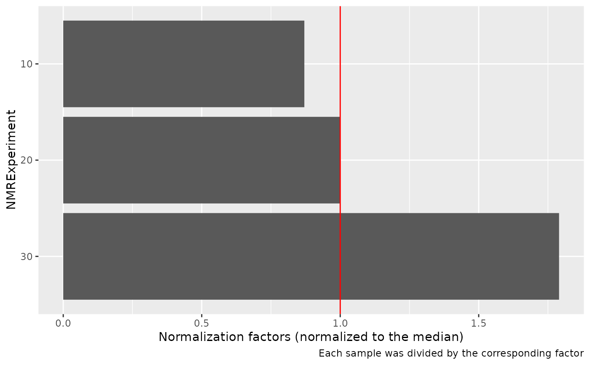

nmr_normalize.RdThe nmr_normalize function is used to normalize all the samples according
to a given criteria.
nmr_normalize(
samples,
method = c("area", "max", "value", "region", "pqn", "none"),
...
)
nmr_normalize_extra_info(samples)A nmr_dataset_1D object
The criteria to be used for normalization - area: Normalize to the total area - max: Normalize to the maximum intensity - value: Normalize each sample to a user defined value - region: Integrate a region and normalize each sample to that region - pqn: Use Probabalistic Quotient Normalization for normalization - none: Do not normalize at all
Method dependent arguments:
- method == "value":
- value: A numeric vector with the normalization values to use
- method == "region":
- ppm_range: A chemical shift region to integrate
- ...: Other arguments passed on to nmr_integrate_regions
The nmr_dataset_1D object, with the samples normalized.
Further information for diagnostic of the normalization process is also saved
and can be extracted by calling nmr_normalize_extra_info() afterwards.
The nmr_normalize_extra_info function is used to extract additional information
after the normalization. Typically, we want to know what was the actual normalization
factor applied to each sample. The extra information includes a plot, representing
the dispersion of the normalization factor for each sample.
Other nmr_dataset_1D functions:
[.nmr_dataset_1D(),
computes_peak_width_ppm(),
file_lister(),
files_to_rDolphin(),
format.nmr_dataset_1D(),
get_integration_with_metadata(),
is.nmr_dataset_1D(),
load_and_save_functions,
new_nmr_dataset_1D(),
nmr_align_find_ref(),
nmr_align(),
nmr_baseline_removal(),
nmr_baseline_threshold(),
nmr_detect_peaks_plot(),
nmr_detect_peaks_tune_snr(),
nmr_detect_peaks(),
nmr_exclude_region(),
nmr_integrate_peak_positions(),
nmr_integrate_regions(),
nmr_interpolate_1D(),
nmr_meta_add(),
nmr_meta_export(),
nmr_meta_get_column(),
nmr_meta_get(),
nmr_pca_build_model(),
nmr_pca_outliers_filter(),
nmr_pca_outliers_plot(),
nmr_pca_outliers_robust(),
nmr_pca_outliers(),
nmr_ppm_resolution(),
plot.nmr_dataset_1D(),
plot_webgl(),
print.nmr_dataset_1D(),
rdCV_PLS_RF_ML(),
rdCV_PLS_RF(),
save_files_to_rDolphin(),
to_ChemoSpec(),
validate_nmr_dataset()
nmr_dataset <- nmr_dataset_load(system.file("extdata", "nmr_dataset.rds", package = "AlpsNMR"))
nmr_dataset <- nmr_normalize(nmr_dataset, method = "area")
norm_dataset <- nmr_normalize(nmr_dataset)
norm_dataset$plot
#> NULL
nmr_dataset <- nmr_dataset_load(system.file("extdata", "nmr_dataset.rds", package = "AlpsNMR"))
nmr_dataset <- nmr_normalize(nmr_dataset, method = "area")
norm_extra_info <- nmr_normalize_extra_info(nmr_dataset)
norm_extra_info$plot
